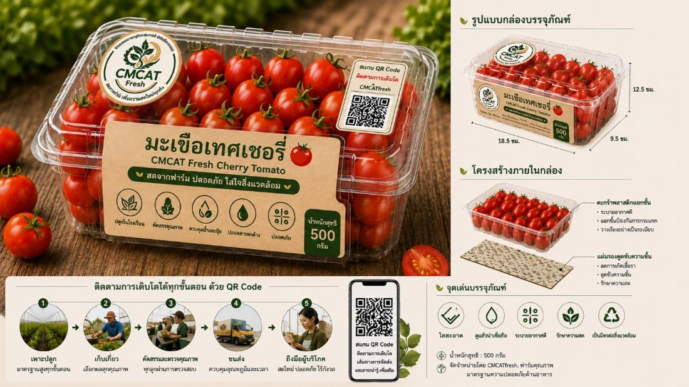
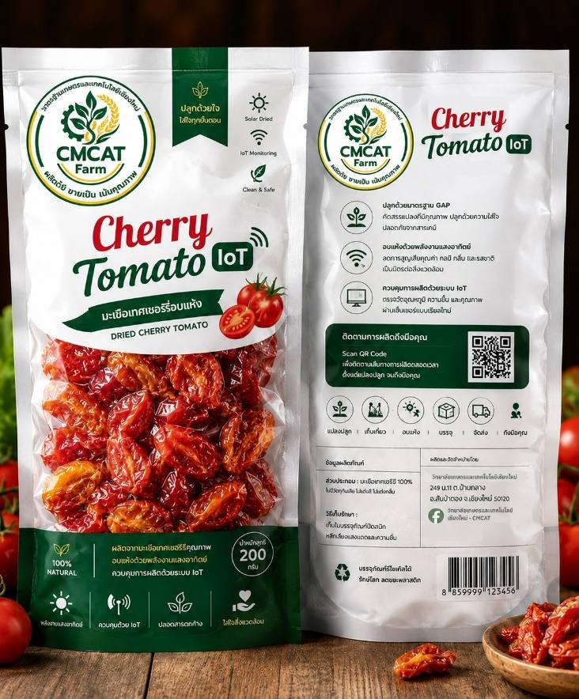

4
ตลาดและผู้ซื้อ
ขายผลสดเกรดพรีเมียมตรงถึงร้านอาหาร โรงแรม คาเฟ่ และผู้บริโภคในเมืองเชียงใหม่ จุดขายคือความสด ปลอดสาร ตรวจสอบย้อนกลับได้ และชื่อเสียงของวิทยาลัย
ราคาของเราเทียบกับตลาด
ราคาขายปลีกในแผน 100 บาท/กก. อยู่ระหว่างราคาตลาดค้าส่งกับราคาบนชั้นวางห้างสรรพสินค้า จึงมีช่องให้ผู้ซื้อ B2B ได้ราคาดีกว่าซื้อปลีก
รายได้ปีที่ 1 มาจากไหน
หลักฐานความต้องการของตลาด
คู่แข่งและความได้เปรียบ
บรรจุภัณฑ์และการจำหน่ายที่ผ่านมา

